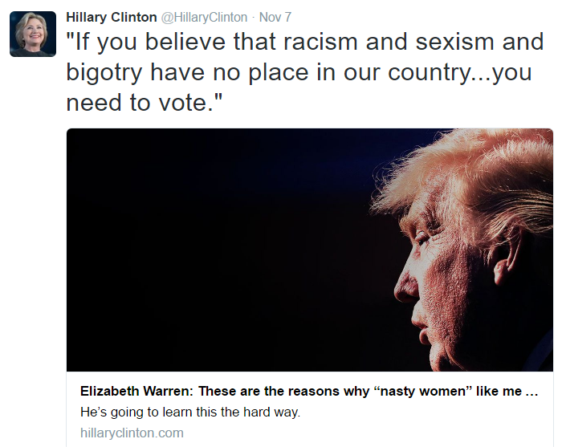
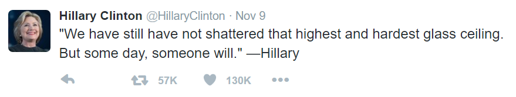
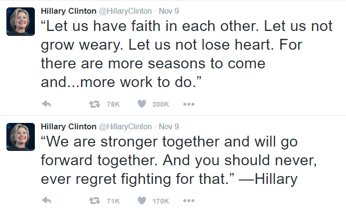

对希拉里 Twitter 的分析犯下这么多的丑闻和罪行，很多人都知道，所以希拉里要成为美国总统，本来几乎是不可能的。希拉里看到了这一点，所以她使出了最后的招数。她利用自己是女人这一特点，开始煽动广大不知情的女性：“女同胞们，你们有力量阻止 Trump！他是一个种族主义者，性别歧视者，偏执狂。我们不能让他做总统，否则灾难就在眼前！”  利用女性对自己的盲从心理和价值等同感，煽动她们的恐惧心理，借此拉到这些无知女性的选票。是的，她成功了，我身边的很多女生确实很支持她，从来没参加过选举的妹纸们，响应号召一拥而上，去注册投票了，投了希拉里的票，甚至有些还参加了抗议 Trump 的游行。可惜就算这样也难以挽回。失败之后，希拉里在她的 Twitter 上说：  “我们还没有粉碎那最高最硬的玻璃屋顶。但是总有一天，有一个人会粉碎它。” 这是非常有煽动性的语言，所谓最高最硬的屋顶，就是登上总统宝座。她是在说，现在还没有任何一个女人当上过美国总统，但是总有一天会的。在这里希拉里用了“我们”（we）这个词，让女性对她产生等同感。好像这不是她一个人在竞选总统，而是所有女性在一起竞选总统一样。其实根本就不是这么回事。希拉里只是为了自己的利益，大公司，大银行的利益而参加选举，她并不代表广大女性。就算她当选了，也不可能给广大女性的生活带来任何的帮助，找不到工作照样找不到。 “没有粉碎最高最硬的玻璃屋顶”，这似乎在说女性长期以来有劣势，因为她是女人，所以人们才没让她当选，就像被“玻璃屋顶”盖住了一样。显然不是那样的。人民不选她，不是因为她是女人，而是因为她不是好人。我也希望美国能有一个女总统啊，非常想。我还希望中国成为母系社会。我希望全世界大部分国家都被女人统治，国防部长都应该是女的，这样世界会更加和平和幸福。然而，希拉里不是好的人选。许多其他女性都可以胜任这些工作，就是希拉里不可以，因为她不具有女性的优点。 另外，“美国第一任女总统”，这种说法有任何的意义吗？美国迫切需要的，只是有一个好人做总统，不管 TA 是男的还是女的，黑的还是白的！就像毛主席说的，不管黄毛还是黑猫，抓住耗子就是好猫。 另外，我发现希拉里的 Twitter 还有一个特点，那就是满篇都是各种“正面”的，“励志”的，有“诗意”，很押韵的语言。俗话说就是“鸡汤”：  看这两条，像不像好莱坞电影里的煽情片段 :P 实际上，希拉里选举失败后的演讲(视频)里，她基本就是把这些 Tweet 一条条的看着字幕念出来（而且念得很吃力），满口的“自由”啊，“奋斗”啊，“包容”啊，“坚持”啊，“信念”啊…… 跟新闻联播似的。从她的眼神里，我看不到真诚：她嘴里说的，不是她心里想的。 对于很多人，这种“正面”，“励志”的话，满篇的歌颂爱啊，真理啊，很容易让涉世不深的人认为这个人内心是美好的，进而对她产生好感。然而对于经历过很多事情的人来说，满篇的这种励志句子，是伪君子的显著特征，你得对这人提高警惕了！这种励志的语言，很容易就可以从书上抄来，或者你绞尽脑汁想一会，总能编出来。它不包含任何实质的，独立的思想，所以非常可能是居心叵测的人用来吊人心的鱼钩。 中国也有一些名人，很喜欢这种语言，每每出来就是教导年轻人的口气，要有诚信啊，要做好人啊，…… 空话连篇。确实这样很容易招来千万的粉丝，然而有经验的人一看，就知道这是怎么回事了。 关于这种正面思维的现象，你可以参考我的另外一篇文章『正面思维的误区』，它其实是美国很普遍的一种有害的思维方式。 |